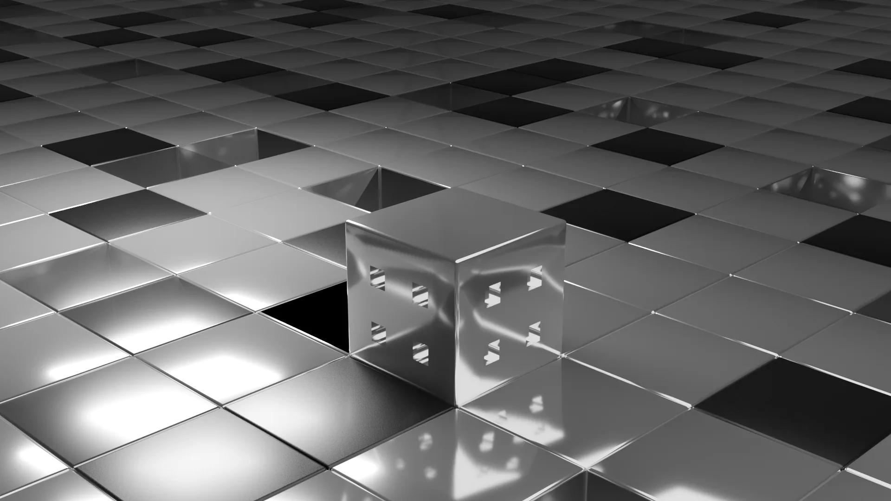
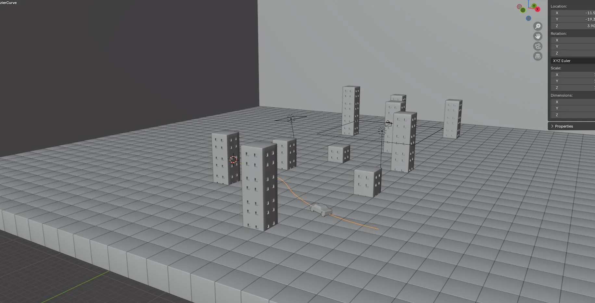
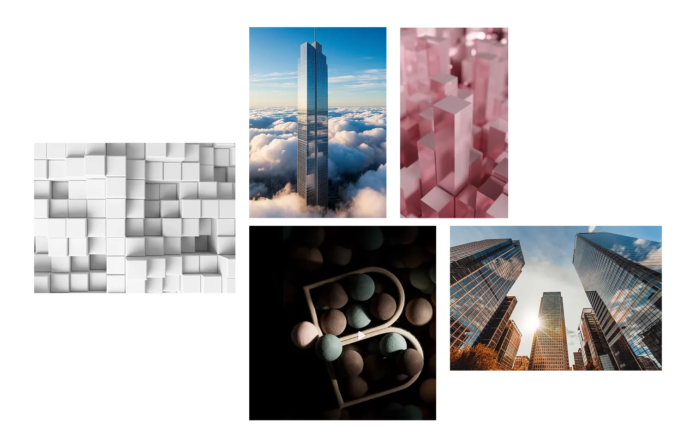
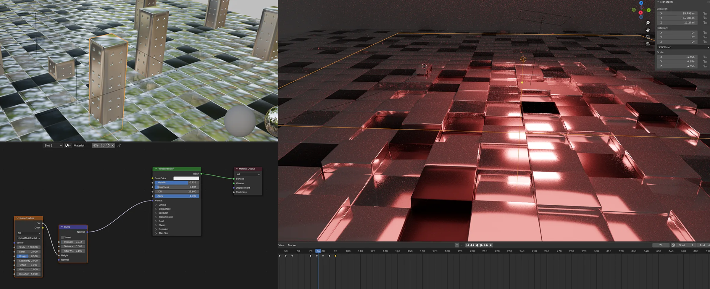
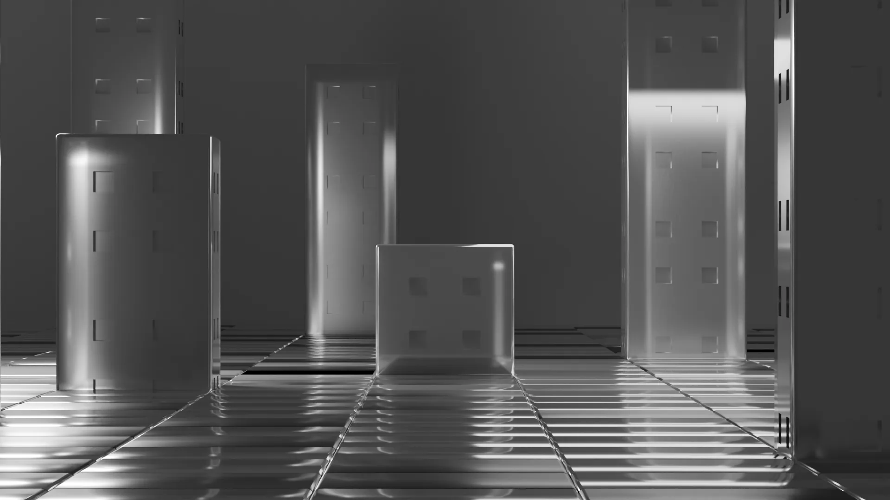
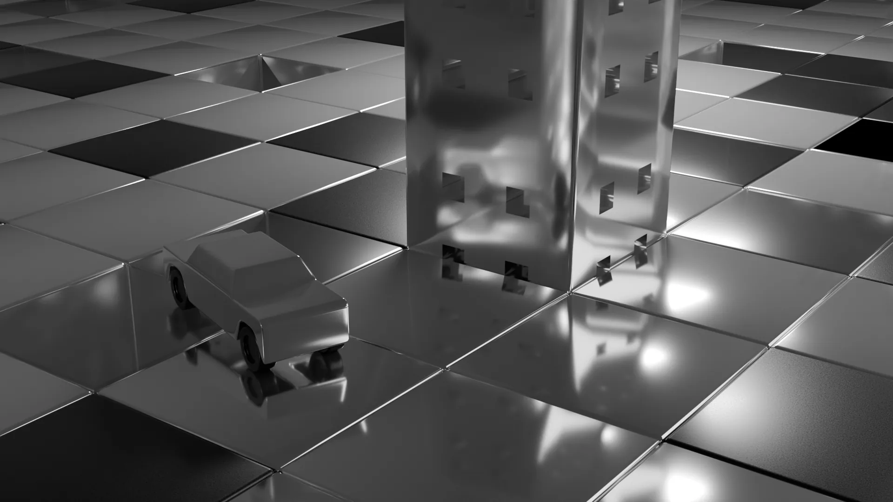
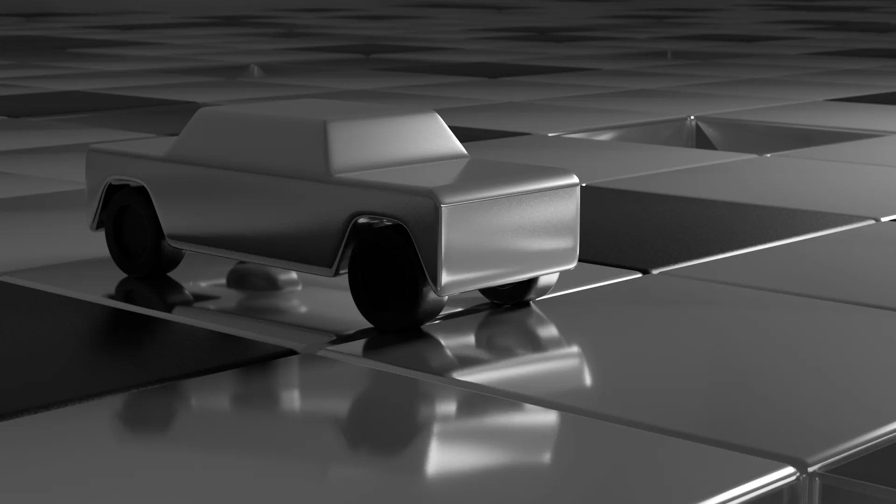

Город «Монополия»
Данный проект — это один из коммерческих заказов. Знакомый попросил создать абстрактную анимацию для сайта по настольным играм. Он прислал референсы из Pinterest, и мы обсудили внешний вид сцены и то, что должно происходить в ней.


Мудборд
Подборка референсов задает тон работе. После отсмотра материалов возникла идея реализовать метафору «растущий город». За основу я взял блоки, из которых постепенно может выстраиваться город, а в качестве основных материалов — стекло, пластик и металл.
Работа над сценой
Сделал раскадровку для понимания алгоритма анимации. Необходимо было показать динамику роста, поэтому выстроил сценарий с нарастающей динамикой. Локация была небольшая, поэтому нужно было сосредоточить внимание на освещении и отражении.




Есть похожая задача?